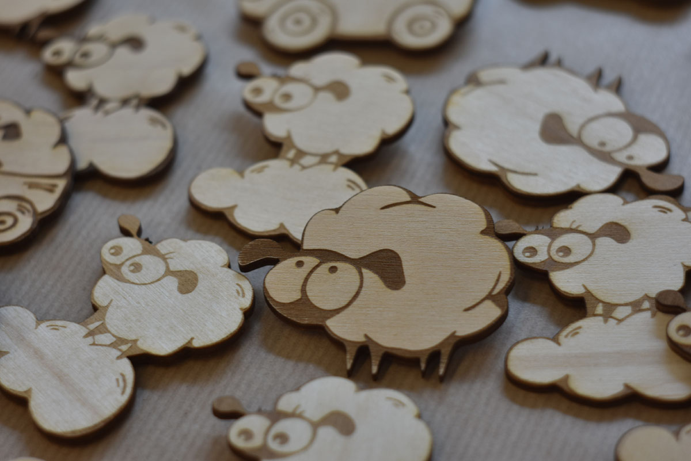

Городовец / Sheep City
Gallery page 2

Персонажи
У овечек всегда есть занятие. Некоторые овечки трудолюбивы и пользуются инструментами. Другие заняты созерцанием сущности.
Чаще всего, созерцатели — это ключевые персонажи. На рисунке с гостиницей все заняты делом, кроме овечки-портье, которая отстранившись от окружающей суеты решает важный вопрос.
Один из вероятных вопросов, решаемый овечкой.
Картинка серии семья Барановых, 2016. Одна из младших сестёр работала в гостиничном бизнесе. Ежедневно погружаясь во всё это.

Эмоции овечек [text]

[text]
Город
Овечки поселяются в любом городе и заполняют его улицы. Становятся фоном городской жизни. Город овец сам становится персонажем рисунка и перенимает характер своих жителей.
Родной город овечек — баварский Мюнхен. Неофициальная столица овечего царства — город Рига на берегу Балтийского моря.

Открытка Риги с видом старого города в летней день,
акварель на картоне, 2016
Архитектура города овец строится по строгим канонам — окна, стены и крыша с котами. Планировка улиц иногда копирует реальный город, иногда подчиняется овечим нуждам — прогулятся по бульварам, сбегать в булочную, посидеть в кафе...
Картинка из серии семья Барановых, 2016

patriot [text]

Иллюстрация непримеримого духа борьбы внутри маленькой овечки, Рига 2016
Культура города
Культура овец красит улицы города в буквальном смысле
Иллюстрация ноября в настольном календаре, 2015

Весьма культурны и образованы [text]
Любят и увлекаются спортом [text]
Больше всего любят вечеринки с друзьями [text]
 party [text]
party [text]
Социальная сторона культуры
Культура овец красит улицы города в буквальном смысле
Иллюстрация ноября в настольном календаре, 2015
[text]
примерное отношение овцы к окружающим
[text]
sheep web [text]
В городе овец всегда рады другим животным.
Линии рисунка
пушкин [text]
Линии контрастные и плоские. Протяжённость и изгиб линии диктуется формой. Толщина линии может символизировать что угодно, от игры светотени до случайного утолщения во время рисования.
Многомерный объем рисунка создаётся как стандартными приёмами, так и сюжетом. На картинке пекарни есть художественная перспектива — уменьшенный в размерах комбайн работает на далльнем фоне. В дополнение к перспективе — геометрическое переплетение труб и облаков чётко определяет где передний и задний края. Звёздочки отделяют реальное от сказочного.
 Первый штрих и вторичная обводка с добавлением воробушка
Изображение рисуется сначала одной линией. Затем каждое пересечение дорабатывается повторной закраской. Первые штрихи наносятся тонко, чтобы оставалась возможность дорисовать детали на переднем плане. Ключевые элементы — например овечья морда — заслоняются только если требует сюжет. Другие элементы — например волнистое туловище — наоборот, желательно чем-нибудь пересечь поверху.
Первый штрих и вторичная обводка с добавлением воробушка
Изображение рисуется сначала одной линией. Затем каждое пересечение дорабатывается повторной закраской. Первые штрихи наносятся тонко, чтобы оставалась возможность дорисовать детали на переднем плане. Ключевые элементы — например овечья морда — заслоняются только если требует сюжет. Другие элементы — например волнистое туловище — наоборот, желательно чем-нибудь пересечь поверху.
Чем больше пересекающихся слоёв, тем интереснее сюжет. Для создания большого количества пересечений, можно воспользоваться карандашным наброском. На котором приблизительно расположить персонажей и найти лучшие точки соприкосновения.

Линии создают контуры и заполняют плоскости [text]
Детализация
Ирония над низкой детализацией рисунка. Использован фрагмент иллюстрации к сказке про короля-ползунка, 2012—2014 Некоторые детали рисунка требуют аккуратной и тщательной работы. Особенно глаза — глаза овечки это зеркало её души. Любая помеха в овальном контуре или мутный зрачок делают всю овечку мутной в психологическом восприятии.
Другие детали требуют обязательной неаккуратности. Чтобы создать контраст и выделить важное. Облачные контуры овец рисуются экспрессивно — быстрыми изогнутыми линиями. Альтернативный вариант — имитировать неаккуратность через нарочное искажение формы, избегая прямых углов и математически правильных дуг.
Детализация и аккуратность зависят от количества информации, которую передаёт задуманный рисунок. Сравните на двух картинках — развлечение с одним луком и сражение с тысячами лучников на одном поле:
Цветные карандаши на плотной бумаге, Франция, 2012

 Марафонское сражение
Марафонское сражениеГреция, 490 год до нашей эры
Цифровое изображение
Овечки не стесняются современных технологий и легко поддаются оцифровке. Нарисованное изображение сканируется и переводится в векторы.

Векторные изображения используются для создания деревянных сувениров при помощи автоматизированного лобзика-выжигателя
Фотография Татьяны Ершовой, Берлин 2017
Векторы используются в изготовлении сувенирной продукции [text]
Использование в IT [text]
[text]
[text]
[text]
[text]
[text]
[text]
[text]
[text]
[text]
[text]
Векторная овечка в формате SVG — популярный формат, который умеют показать все современные браузеры. Можно увеличить иконки и рассмотреть большое изображение.
Иконка загрузки [text]
анимация [text]
[text]
[text]
[text]
[text]
[text]
[text]
[text]
[text]
[text]
[text]
Эпилог
Sheep City Summary
Город овец — это образное выражение. Любой город может стать городом овец. Достаточно нарисовать одну овечку, как вскоре появится ещё одна и ещё. Рано или поздно овечки заполнят весь город. Будут занимать столики в кафе, создавать пробки на дорогах и ждать автобуса.
Жить с овечками в мире и согласии — очень комфортно.